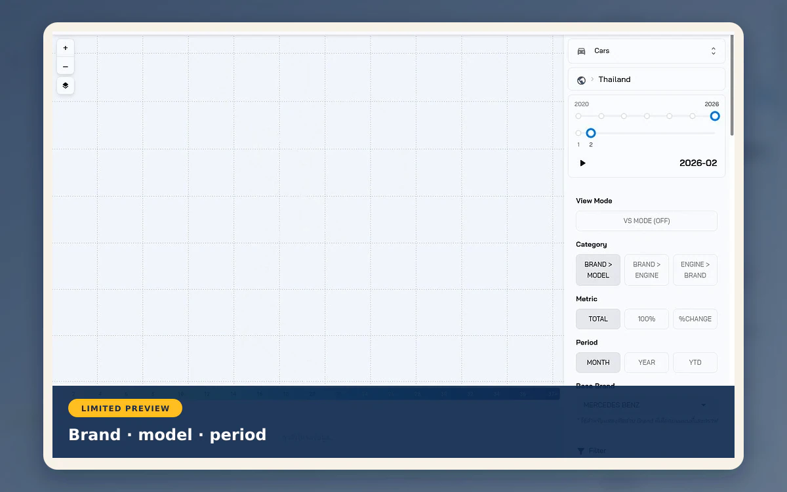

CityMETER · Location
Registered Cars
Explore first-time vehicle registrations by province, vehicle type and brand to frame market research.
Open the map ↗
Compare brands using the same registration base
Time, vehicle-type and brand filters change the denominator. Shares are calculated within the selected brands. Keep that brand set the same when comparing provinces and periods to frame service-network questions.
These are first-time registrations, not all vehicles in use. They do not establish purchasing power or travel behaviour.
Two questions to start with
- Within the selected brands, which has the largest first-time registration share in the target province?
- How does the pattern change across comparable periods?
Explore the area on the map
Match the province, vehicle type, period and selected brand set before using the pattern in a market or service plan.
Read further at the source
References, dates and data coverage
Reference checked
- Data publisher
- Department of Land Transport
- Source
- References Department of Land Transport first-registration statistics. Read the selected year, month, vehicle type, make and model with each result.
- Data period
- Month and year selections start in 2020; read the latest available month on the data view and state the selected brands when comparing shares.
- Coverage
- A Thailand summary view is visible; source coverage is not stated
- Level of detail
- First-time registration counts by province, period, selected vehicle types and brands
Read the references
When comparing or citing the data
Counts represent first-time registrations within the filters. Brand shares use selected records, not the active fleet, purchasing power or travel behaviour.
 FazeSoftware development
FazeSoftware development

Share this summary
Send it to someone exploring the same question